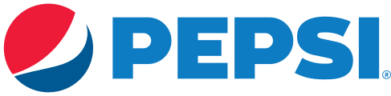
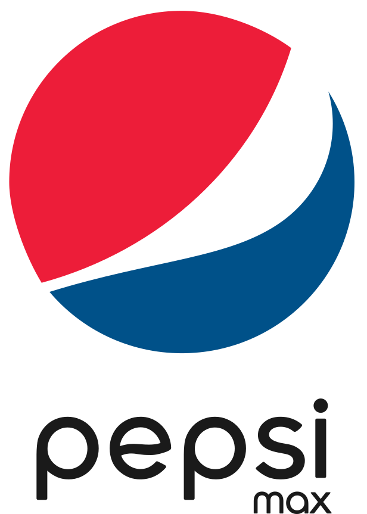

펩시 Pepsi
펩시(Pepsi)는 1893년 미국 노스캐롤라이나주 뉴번의 약사 케일럽 브래덤이 만든 탄산음료에서 출발해 1898년 '펩시콜라'로 개명된 음료 브랜드다. 1965년 프리토레이와의 합병으로 모기업 펩시코가 출범했다.
최종 업데이트
펩시는 어떤 브랜드인가
펩시(Pepsi)는 1893년 미국 노스캐롤라이나주 뉴번의 약사 케일럽 브래덤(Caleb Bradham)이 만든 탄산음료 '브래즈 드링크'에서 출발했다. 1898년 '펩시콜라(Pepsi-Cola)'로 개명되었으며, 소화불량(dyspepsia) 완화를 표방한 데서 이름이 유래한 것으로 전해진다.
1965년 펩시콜라사와 프리토레이의 합병으로 모기업 펩시코(PepsiCo)가 출범했다.
펩시는 어떻게 봐야 할까
펩시는 코카콜라와의 콜라 전쟁에서 도전자 위치를 전략적 정체성으로 삼아온 브랜드다. 1975년 시작한 블라인드 맛 비교 캠페인 펩시 챌린지로 맛 우위를 내세우며 젊고 트렌드 지향적인 이미지를 키운 점이 향수와 전통을 강조하는 코카콜라와의 핵심 차별점이다.
글로벌 콜라 시장에서 코카콜라가 약 50퍼센트를, 펩시가 약 20퍼센트를 차지해 음료 단일 경쟁에서는 열세지만, 스낵을 아우르는 펩시코 전체 매출은 코카콜라사를 앞선다. 2023년에는 14년 만에 로고를 전면 교체해 1980년대 평면형 지구본을 되살리고 검은색 펩시 글자와 일렉트릭 블루를 도입했으며 무설탕 제품인 펩시 제로 슈거를 전면에 부각했다.
한국에서는 롯데칠성음료가 펩시코 라이선스를 받아 생산하며, 롯데리아와 롯데시네마 등 롯데 계열 유통망을 통해 코카콜라의 빈자리를 파고드는 점이 독특하다. 국내 탄산음료 시장은 코카콜라가 약 47퍼센트로 1위, 롯데칠성이 약 39퍼센트로 2위를 형성한다.
펩시는 어떻게 시작되고 성장했나
펩시는 1893년 미국의 약사였던 케일럽 브래드햄이 설립했다. 소화제의 일종인 '브래드의 음료'를 판매하기 시작하면서 1898년에 펩시 콜라 컴퍼니를 설립했다.
이후 몇 번의 재정적인 위기를 거쳤지만, 다양한 변화를 시도한 펩시는 현재 대규모 인수합병을 통해 건강 음료 브랜드로 거듭나게 되었다.
펩시의 브랜드 아이덴티티는 무엇인가
펩시의 시각 정체성을 상징하는 핵심은 적·백·청의 원형 '펩시 글로브(Pepsi Globe)'로, 수십 년에 걸쳐 여러 차례 변형을 거쳤다. 2008년에는 아넬 그룹(Arnell Group)이 글로브를 재설계해 흰 중앙 띠가 비대칭으로 휘어진 이른바 '스마일' 형태를 도입했고, 당시 유출된 27페이지 'BREATHTAKING' 전략 문서가 지구 중력장·황금비 등을 근거로 들어 디자인계에서 큰 논란을 일으켰다.
2023년 펩시는 창립 125주년을 맞아 14년 만에 시각 정체성을 전면 개편하여, 1987~1997년 글로브 시대를 참조한 디자인과 함께 검정·일렉트릭 블루를 기존 팔레트에 추가하고 글로브와 워드마크를 하나로 결합했으며 움직임을 표현하는 '펄스(pulse)' 모션 요소를 도입했다. 워드마크에는 'Owners'를 커스터마이즈한 전용 서체 '펩시 오너스(Pepsi Owners)'가 쓰였다.
펩시의 대표 제품과 서비스는 무엇인가
펩시, 다이어트 펩시, 마운틴 듀, 세븐업, 게토레이, Mauby, Punica, Paso de los Toros
펩시는 지금 어떤 상태인가
2023년 새 로고와 시각 정체성은 그해 가을 북미에서 우선 적용된 뒤 2024년 글로벌로 전개되었으며, 검정 컬러의 도입은 펩시 제로 슈거에 대한 지향을 반영한 것으로 펩시코가 공식 설명했다.
펩시 연혁 — 주요 사건은 언제였나
펩시 로고는 어떻게 변해왔나

BI/CI 아카이브 2보관 이미지 2
BI/CI 아카이브 3보관 이미지 3자주 묻는 질문
펩시는 언제 설립되었나요?
펩시는 1893년 설립되었습니다.
펩시의 브랜드 아이덴티티는 무엇인가요?
펩시의 시각 정체성을 상징하는 핵심은 적·백·청의 원형 '펩시 글로브(Pepsi Globe)'로, 수십 년에 걸쳐 여러 차례 변형을 거쳤다.
펩시의 대표 제품은 무엇인가요?
펩시, 다이어트 펩시, 마운틴 듀, 세븐업, 게토레이, Mauby, Punica, Paso de los Toros
펩시는 현재 어떤 상태인가요?
2023년 새 로고와 시각 정체성은 그해 가을 북미에서 우선 적용된 뒤 2024년 글로벌로 전개되었으며, 검정 컬러의 도입은 펩시 제로 슈거에 대한 지향을 반영한 것으로 펩시코가 공식 설명했다.
출처와 검증
브랜드명은 한글과 원어를 함께 표기하되 데이터에 없는 표기는 만들지 않습니다. 기원 국가·설립연도는 검수된 정의문에서 확인된 값을 우선하고, 없을 때만 공식 웹사이트 URL이 일치하는 위키데이터 개체의 값을 씁니다.